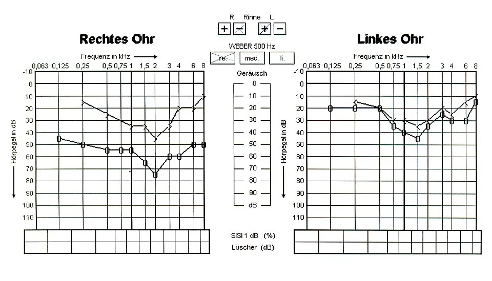
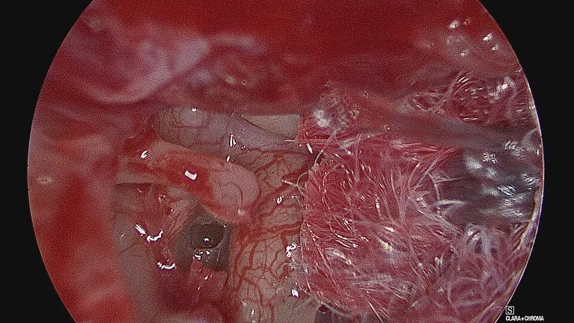

DX.3 — Otospongiose
L’otospongiose bloque peu à peu l’étrier dans la fenêtre ovale et produit une surdité de transmission progressive, à tympan normalS1S3. Le médecin de premier recours la soupçonne devant un adulte jeune, souvent une femme, dont l’audition baisse lentement et dont la famille est atteinteS1S6. L’appareil auditif et la chirurgie de l’étrier restent les deux traitements ; aucun médicament ne figure pour cette indication dans l’AIPS (information professionnelle suisse)S1S7.
1. Définition
Le docteur Albert Mudry, otologue suisse, définit l’otospongiose comme une maladie de l’os de l’oreille qui provoque progressivement un blocage de l’étrierS1. La revue de l’université de Pise la décrit comme une ostéodystrophie de la capsule otique, limitée à l’os temporalS3.
2. Épidémiologie (Suisse, puis Europe)
Aucune prévalence suisse mesurée n’a été trouvée ; la source suisse lue donne un ordre de grandeur, et une cohorte finlandaise fournit le chiffre européenS1S5. Le tableau des chiffres sépare prévalence, terrain et latéralité, tandis que l’histoire naturelle explique pourquoi la gêne apparaît chez l’adulte jeuneS1S3.
Prévalence, terrain et latéralité : données chiffrées
| Donnée | Population et mesure | Année | Source |
|---|---|---|---|
| Otospongiose chez 1,3 % des sujets examinés | 850 adultes de 54 à 66 ans tirés du registre de population, Finlande ; examen otologique et audiométrie | 2012 | S5 |
| Otite moyenne chronique chez 5,3 % et maladie de Ménière chez 0,7 % des mêmes sujets | Même cohorte finlandaise ; comparaison utile pour le rang de fréquence | 2012 | S5 |
| Environ 0,3 % de la population blanche est touchée ; la maladie est dix fois plus fréquente chez les Blancs que chez les Noirs | Estimation d’un otologue suisse, sans population mesurée | 2026 | S1 |
| Les premiers signes apparaissent généralement entre 30 et 50 ans | Synthèse clinique suisse et page du NHS (National Health Service) | 2026 | S1S6 |
| L’atteinte est bilatérale chez 80 % des patients | Revue italienne de l’évaluation audiologique | 2025 | S3 |
| L’atteinte reste unilatérale dans environ 30 % des cas | Synthèse clinique suisse | 2026 | S1 |
| Le remodelage entoure aussi la cochlée dans moins de 15 % des cas | Synthèse clinique suisse ; forme dite cochléaire | 2026 | S1 |
| Des symptômes vestibulaires sont rapportés jusque chez 40 % des patients | Revue italienne de l’évaluation audiologique | 2025 | S3 |
Le chiffre de 1,3 % porte sur des sexagénaires finlandais non sélectionnés ; il ne s’applique donc pas tel quel à la population suisse généraleS5. Le rang 5 de la liste canonique repose sur cette prévalence et sur la fréquence relative des autres causes, sans chiffre suisse publiéS5.
La différence entre 80 % de formes bilatérales et 30 % de formes unilatérales tient au moment de l’observation, car l’atteinte commence souvent d’un seul côtéS1S3.
Histoire naturelle : du foyer osseux au handicap auditif
| Étape | Ce qui se passe | Conséquence clinique | Source |
|---|---|---|---|
| Foyer actif | L’os devient spongieux, surtout en avant de la fenêtre ovale | Aucun signe, ou réflexe stapédien biphasique précoce | S1S3 |
| Fixation de la platine | La sclérose réduit la mobilité de la platine de l’étrier | Surdité de transmission sur les fréquences graves | S1S3 |
| Rigidité de la chaîne | L’écart entre conduction aérienne et osseuse s’élargit à toutes les fréquences | Gêne sociale, acouphènes | S3 |
| Atteinte cochléaire | Le foyer progresse vers l’endoste de la cochlée | Surdité mixte, puis de perception | S1S3 |
La maladie connaît des phases d’aggravation, parfois liées à des changements hormonaux comme la grossesse, mais ce lien reste controverséS1. Un appareil auditif améliore l’écoute sans freiner la progression, ce que le NHS rappelle explicitement aux patientsS6.
3. Physiopathologie
Le remodelage osseux traverse d’abord un stade spongieux de destruction, puis un stade de sclérose, ce qui explique les deux noms otospongiose et otoscléroseS1. La platine de l’étrier transmet normalement la vibration du tympan à la périlymphe par la fenêtre ovale ; l’otospongiose rigidifie ce dernier maillonS1S3. Le terrain génétique et hormonal explique la répartition familiale et l'aggravation possible pendant la grossesse. Le mécanisme pas à pas relie chaque lésion à un signe audiométrique, et la figure anatomique ci-dessous situe l’étrier, la fenêtre ovale et la cochléeS3S11.
Terrain : hérédité, sexe et hormones
| Facteur | Donnée | Portée pratique | Source |
|---|---|---|---|
| Hérédité | Transmission autosomique dominante à pénétrance incomplète | Un parent atteint ne transmet pas toujours la maladie | S1 |
| Histoire familiale | Maladie souvent familiale | Question systématique à l’anamnèse | S1S6 |
| Sexe | Atteinte plus fréquente chez la femme | Profil typique de la jeune adulte | S1 |
| Hormones | Phases d’aggravation parfois liées à la grossesse | Lien controversé ; aucune conduite spécifique ne s’en déduit | S1 |
| Origine ethnique | Maladie dix fois plus fréquente chez les Blancs que chez les Noirs | Ordre de grandeur, sans étude suisse | S1 |
| Espèce | Maladie propre à l’espèce humaine | Absence de modèle animal spontané | S1 |
La revue de Pise décrit un remodelage osseux pathologique limité à l’os temporal, ce qui explique l’absence d’atteinte squelettique associéeS3.
Mécanisme : de la lésion osseuse au signe mesuré
| Lésion | Effet physique | Signe mesuré | Source |
|---|---|---|---|
| Foyer à la fissula ante fenestram, en avant de la fenêtre ovale | Ankylose progressive de la platine | Écart aérien-osseux d’abord sur les graves | S3S4 |
| Chaîne ossiculaire rigide | Perte de la résonance de l’oreille moyenne, dont le maximum se situe vers 2 kHz | Encoche de Carhart : conduction osseuse abaissée jusqu’à 25 dB à 2 kHz | S3 |
| Platine fixée | La contraction du muscle de l’étrier ne modifie plus l’impédance | Réflexe stapédien absent, en mode ipsilatéral et controlatéral | S1S3 |
| Foyer rétrofenestral | Extension vers l’endoste cochléaire | Composante de perception, surdité mixte | S3 |
| Oreille moyenne raide | Le bruit de fond est atténué comme la parole | Paracousie de Willis : meilleure écoute dans le bruit | S3 |
L’encoche de Carhart traduit un artefact mécanique et non une lésion de l’oreille interne ; elle disparaît donc après une chirurgie réussieS3. Cette nuance évite de conclure trop vite à une atteinte cochléaire irréversible devant une conduction osseuse abaissée à 2 kHzS3.
La maladie est souvent familiale, avec une transmission autosomique dominante à pénétrance incomplète ; elle touche plus fréquemment les femmesS1.
Coupe de l’oreille : le siège de l’otospongiose : Blausen Medical a dessiné cette illustration en couleurs, publiée sous licence CC BY 3.0S11.

Le lecteur recherche d’abord sur le cliché brut le tympan, les osselets, les deux fenêtres et la cochlée.
- 1. Le repère 1 montre la chaîne des osselets, dont l’étrier se fixe dans l’otospongioseS11S1.
- 2. Le repère 2 montre la fenêtre ovale, dont la région antérieure porte le foyer le plus fréquentS11S4.
- 3. Le repère 3 montre la cochlée, que le remodelage entoure dans la forme dite cochléaireS11S1.
- 4. Le repère 4 montre le tympan, qui reste normal à l’otoscopie, ce qui distingue l’otospongiose de l’épanchementS11S1.
- 5. Le repère 5 montre la fenêtre ronde, dont l’oblitération peut limiter le résultat chirurgicalS11S4.
4. Démarche diagnostique
La démarche part d’une hypoacousie lente à tympan normal : le médecin confirme d’abord la transmission au diapason, puis demande l’audiogramme et l’impédancemétrieS3. Le tableau différentiel compare l’otospongiose aux autres causes du LOT, puis les étapes chiffrées fixent l’ordre des gestesS3S4. La répartition des rôles précise ce qui revient au premier recours, à l’audiologie et à l’oto-rhino-laryngologiste (ORL)S6S9.
Diagnostic différentiel d’une surdité de transmission ou mixte
| Diagnostic | Tympan | Indice discriminant | Lien |
|---|---|---|---|
| Otospongiose (DX.3) | Normal | Réflexe stapédien absent, encoche de Carhart, histoire familiale | S1S3 |
| Cholestéatome (DX.9) 🚩 E3 | Poche de rétraction ou perforation | Otorrhée chronique fétide | DX.9 |
| Otite moyenne avec épanchement (DX.2) | Mat, rétracté ou bombé | Tympanogramme plat de type B | DX.2 |
| Bouchon de cérumen (DX.1) | Masqué | Bouchon visible à l’otoscopie | DX.1 |
| Déhiscence du canal semi-circulaire supérieur | Normal | Vertiges au bruit, autophonie, potentiels évoqués vestibulaires présents à seuil bas | S3S4 |
| Aqueduc vestibulaire élargi | Normal | Potentiels évoqués vestibulaires présents à seuil bas ; imagerie | S3 |
| Maladie de Ménière (DX.7) | Normal | Vertiges en crises, surdité de perception fluctuante | DX.7 |
Une transmission à tympan normal n’est donc pas propre à l’otospongiose : une anomalie de l’oreille interne peut produire un faux écart aérien-osseuxS3. Le chirurgien recherche alors ces imitations avant d’opérer, car une chirurgie de l’étrier n’améliore pas une déhiscence du canal supérieurS1.
Répartition des rôles entre premier recours et spécialistes
| Intervenant | Ce qu’il apporte | Ce qu’il ne fait pas | Source |
|---|---|---|---|
| Médecin de famille | Examen des oreilles, diapason, orientation vers l’audiologie et l’ORL | Pas d’indication opératoire | S6 |
| Audiologiste | Audiométrie tonale et vocale, tympanométrie, réflexes | Pas de décision thérapeutique | S3S6 |
| ORL | Synthèse clinique, scanner, choix partagé du traitement | Il ne remplace pas le choix du patient | S1S6 |
| Expert ORL reconnu par l’assurance-invalidité (AI) | Constat de la perte auditive pour le forfait d’appareillage | Il ne fournit pas l’appareil | S9 |
| Audioprothésiste | Adaptation et maintenance de l’appareil | Pas de diagnostic | S9 |
Étapes de la démarche, du cabinet au spécialiste
| Étape | Acteur | Action | Résultat attendu | Source |
|---|---|---|---|---|
| 1 | Médecin de premier recours | Otoscopie, Weber et Rinne | Tympan normal, Weber latéralisé du côté atteint, Rinne négatif | S1S3 |
| 2 | Médecin de premier recours | Adresser pour audiométrie et avis ORL (oto-rhino-laryngologie) | Consultation non urgente si la baisse est lente | S6 |
| 3 | Audiologie | Audiométrie tonale, tympanométrie, réflexes stapédiens | Écart aérien-osseux, tympanogramme A ou As, réflexe absent | S3 |
| 4 | ORL | Tests complémentaires si doute : potentiels évoqués myogéniques vestibulaires, absorbance | Exclusion d’une fausse transmission d’origine interne | S3 |
| 5 | ORL et radiologie | Tomodensitométrie si une chirurgie est envisagée | Foyer hypodense, anatomie du nerf facial, imitation exclue | S1S4 |
| 6 | Patient et ORL | Choix entre appareil auditif et chirurgie | Décision partagée après information | S1 |
Une surdité installée en trois jours ou moins ne relève pas de cette démarche lente. Le NICE (National Institute for Health and Care Excellence) impose alors un avis ORL dans les 24 heuresS10.
5. Anamnèse ciblée et drapeaux rouges
L’anamnèse cherche une surdité progressive, souvent sur plusieurs années, une histoire familiale et des acouphènes ; elle traque aussi les signes qui orientent ailleursS1S6. Les questions ciblées pèsent l’hérédité, la grossesse et le mieux-entendre dans le bruit, et les drapeaux rouges imposent une autre filièreS3S10. Les vertiges avant toute chirurgie méritent une fenêtre propre, car ils changent l’indication opératoireS14.
Questions ciblées et valeur de la réponse
| Question | Réponse évocatrice | Interprétation | Source |
|---|---|---|---|
| Depuis quand l’audition baisse-t-elle ? | Lentement, sur plusieurs années | Évolution typique d’une fixation progressive | S6 |
| Un parent proche entend-il mal jeune ? | Oui | Maladie souvent familiale, dominante à pénétrance incomplète | S1 |
| Entendez-vous mieux dans le bruit ? | Oui | Paracousie de Willis, liée à la transmission | S3 |
| Avez-vous des acouphènes ? | Oui, fréquents | Symptôme très répandu, non spécifique | S3 |
| La gêne s’est-elle aggravée pendant une grossesse ? | Parfois | Lien hormonal évoqué mais controversé | S1 |
| Avez-vous des vertiges au bruit ou à l’effort de pression ? | Oui | Évoque une déhiscence du canal supérieur | S4 |
| Avez-vous des vertiges rotatoires en crises ? | Oui | Évoque une maladie de Ménière | S3 |
Vertiges avant la chirurgie : fréquence et signification
| Donnée | Valeur | Signification | Source |
|---|---|---|---|
| Symptômes vestibulaires chez les patients atteints | Jusqu’à 30 % | Instabilité, étourdissements ou vertiges | S14 |
| Incidence préopératoire selon les études | De 8,6 % à 30 % | Grande variabilité des définitions | S14 |
| Vertige positionnel associé | 32,5 % des patients d’une série | Dépôts cupulaires plus fréquents dans les rochers atteints | S14 |
| Syndrome de Ménière associé | 30 % des patients de la même série | Hydrops à rechercher avant d’opérer | S14 |
| Vertiges spontanés récidivants | Environ 27,5 % | Évoque une atteinte de l’oreille interne | S14 |
Ces chiffres proviennent de séries hospitalières hétérogènes ; ils montrent surtout qu’un vertige préopératoire doit être exploré avant de toucher à l’étrierS14. La revue de Pise rappelle que ces symptômes peuvent cacher une maladie de Ménière, un aqueduc élargi ou une déhiscence du canal supérieurS3.
Drapeaux rouges : quand ce n’est pas une otospongiose banale
| Signe | Ce qu’il évoque | Conduite | Source |
|---|---|---|---|
| Surdité installée en 3 jours ou moins, datant de moins de 30 jours | Surdité brusque (DX.6) | Avis ORL ou urgence dans les 24 heures | S10 |
| Surdité brusque datant de plus de 30 jours | Surdité brusque vue tardivement | Avis ORL urgent, dans les 2 semaines | S10 |
| Otorrhée chronique, tympan anormal | Cholestéatome (DX.9) | Avis ORL rapide | DX.9 |
| Surdité de perception asymétrique sans transmission | Schwannome vestibulaire (DX.8) | Audiogramme puis imagerie par résonance magnétique (IRM) | DX.8 |
| Parésie faciale associée | Lésion de l’angle ou du conduit auditif interne | IRM du conduit auditif interne, quel que soit l’audiogramme | S10 |
Aucun de ces signes n’appartient au tableau de l’otospongiose ; leur présence oblige donc à chercher une autre cause avant toute chirurgie de l’étrierS1S10.
6. Examen physique ciblé, région par région
L’examen physique est pauvre par définition, car le tympan reste normal ; il sert surtout à prouver la transmission et à écarter les imitationsS1S3. Trois régions suffisent : le conduit et le tympan, l’acoumétrie au diapason, puis l’examen neuro-otologiqueS3.
Région 1 — conduit auditif et tympan
| Geste | Constat dans l’otospongiose | Constat qui oriente ailleurs | Source |
|---|---|---|---|
| Otoscopie | Conduit libre, tympan normal | Bouchon, épanchement, poche de rétraction | S1 |
| Mobilité tympanique | Conservée | Diminuée en cas d’épanchement | S3 |
Une otoscopie normale ne suffit pas, car d’autres anomalies de la chaîne ou de l’oreille interne donnent la même combinaisonS3.
Région 2 — acoumétrie au diapason
| Test | Réalisation | Résultat dans une transmission | Source |
|---|---|---|---|
| Weber | Diapason posé sur le front ou le vertex | Latéralisé vers l’oreille atteinte | S3 |
| Rinne | Comparaison conduction aérienne et osseuse de chaque oreille | Négatif du côté atteint | S3 |
Les deux tests reposent sur les mêmes principes physiques que l’audiométrie ; ils confirment rapidement l’existence d’un écart aérien-osseuxS3. L’audiogramme de la figure du point 9 porte ces deux résultats en tête de feuille, ce qui permet de les comparer aux courbesS12.
Région 3 — nerfs crâniens et équilibre
| Geste | Constat attendu | Signe d’alarme | Source |
|---|---|---|---|
| Motricité faciale | Normale | Parésie : IRM du conduit auditif interne | S10 |
| Recherche de vertige provoqué | Absent le plus souvent | Vertige au bruit : déhiscence du canal supérieur | S4 |
Des symptômes vestibulaires existent chez une partie des patients ; le médecin les explore, car ils peuvent masquer une maladie qui imite l’otospongioseS3.
7. Approche syndromique
Le syndrome à reconnaître associe une surdité de transmission progressive, un tympan normal et un réflexe stapédien absent chez l’adulte jeuneS1S3. Le tableau des trois types de surdité replace ce syndrome parmi les autres. Le tableau syndromique oppose cette forme fenestrale à la forme cochléaire, qui ajoute une composante de perceptionS1S3.
Transmission, perception ou mixte : les signes qui tranchent
| Type | Weber | Rinne | Audiogramme | Exemple du LOT | Source |
|---|---|---|---|---|---|
| Transmission | Vers l’oreille atteinte | Négatif du côté atteint | Conduction osseuse normale, aérienne abaissée | Otospongiose fenestrale, épanchement, bouchon | S3 |
| Perception | Vers l’oreille saine | Positif | Courbes aérienne et osseuse abaissées ensemble | Presbyacousie, schwannome, surdité brusque | S3S10 |
| Mixte | Variable | Variable | Écart aérien-osseux et conduction osseuse abaissée | Otospongiose évoluée ou cochléaire | S3 |
Le Weber et le Rinne d’une surdité de perception sont donnés ici par déduction physiologique ; la revue lue ne décrit que leur résultat dans la transmissionS3.
Formes cliniques et leur traduction audiométrique
| Forme | Audiogramme | Réflexe stapédien | Conduite | Source |
|---|---|---|---|---|
| Fenestrale débutante | Transmission sur les graves | Réponse biphasique possible | Surveillance audiométrique | S3 |
| Fenestrale constituée | Écart aérien-osseux sur toutes les fréquences, encoche de Carhart | Absent | Appareil auditif ou chirurgie | S3 |
| Cochléaire, ou labyrinthisée | Surdité mixte ou de perception | Absent | Appareillage ; implant cochléaire si l’appareil ne suffit plus | S1S7 |
8. Diagnostic positif et critères
Aucun test isolé ne permet une sensibilité ou une spécificité suffisante ; le diagnostic clinique additionne donc plusieurs arguments concordantsS3. La preuve formelle reste histologique et postopératoire, ce que résume la grille de diagnostic positifS3. Les arguments contraires obligent à reconsidérer le diagnostic avant tout geste sur l’étrierS1S3S4.
Arguments contre l’otospongiose et diagnostic à évoquer
| Constat | Pourquoi il dérange | Diagnostic à évoquer | Source |
|---|---|---|---|
| Tympan anormal à l’otoscopie | L’otospongiose laisse le tympan normal | Épanchement, cholestéatome | S1 |
| Réflexe stapédien présent du côté atteint | La platine reste mobile | Autre atteinte de la chaîne ou fausse transmission | S3 |
| Potentiels vestibulaires présents à seuil bas | La fixation de l’étrier les abolit habituellement | Déhiscence du canal supérieur, aqueduc élargi | S3 |
| Vertiges provoqués par le bruit ou l’autophonie | Symptômes de troisième fenêtre | Déhiscence du canal supérieur | S4 |
| Installation en quelques jours | L’otospongiose évolue sur des années | Surdité brusque (DX.6) | S10S6 |
| Surdité de perception asymétrique isolée | Aucune composante de transmission | Schwannome vestibulaire (DX.8) | S10 |
Un seul argument contraire suffit à suspendre l’indication opératoire tant que le bilan ORL ne l’a pas expliqué ; cette règle découle des imitations décritesS1S3.
Grille de diagnostic positif
| Argument | Poids | Limite | Source |
|---|---|---|---|
| Surdité progressive, histoire familiale, acouphènes, paracousie | Orientation | Aucun n’est spécifique | S3 |
| Otoscopie normale avec transmission | Fort | Partagé par d’autres atteintes de la chaîne ou de l’oreille interne | S3 |
| Tympanogramme A ou As | Compatible | Le tympanogramme classique à 226 Hz distingue mal l’oreille saine | S3 |
| Réflexe stapédien absent | Fort | Peut rester présent si aucun foyer ne touche la fenêtre ovale | S3 |
| Encoche de Carhart à 2 kHz | Évocateur | Non pathognomonique ; parfois absente | S3 |
| Foyer hypodense à la tomodensitométrie | Confirmatif s’il est vu | Sensibilité variable selon l’appareil et le lecteur | S4 |
| Constat peropératoire et histologie | Preuve | Disponible seulement après chirurgie | S3 |
9. Examens complémentaires
Les examens complémentaires répondent à trois questions : existe-t-il un écart aérien-osseux, la platine est-elle fixée, et une imitation est-elle exclueS3S4 ? Chaque examen a sa fenêtre : la lecture pas à pas, l’audiométrie tonale, impédancemétrie, tests de second niveau, tomodensitométrie et imagerie après échecS3S4.
Lire un audiogramme de transmission, pas à pas
| Pas | Ce que le lecteur vérifie | Constat dans l’otospongiose | Source |
|---|---|---|---|
| 1 | Position de la courbe osseuse par rapport à la courbe aérienne | La conduction aérienne est nettement plus mauvaise que l’osseuse | S3 |
| 2 | Fréquences où l’écart est maximal | Graves au début, puis toutes les fréquences | S3 |
| 3 | Forme de l’écart vers les aigus | Diminution progressive, signe de la rigidité élastique de la chaîne | S3 |
| 4 | Conduction osseuse à 2 kHz | Encoche de Carhart, jusqu’à 25 dB | S3 |
| 5 | Conduction osseuse aux autres fréquences | Abaissée dans la forme cochléaire ou mixte | S3 |
| 6 | Résultat du diapason noté sur la feuille | Weber du côté atteint, Rinne négatif | S3S12 |
Cette lecture suit l’ordre physiologique : elle sépare d’abord transmission et perception, puis cherche les signes propres à la fixation de l’étrierS3.
Audiométrie tonale et vocale : indication, seuils, interprétation
| Élément | Seuil ou valeur | Interprétation | Conduite | Source |
|---|---|---|---|---|
| Écart aérien-osseux | Présent, d’abord sur les graves | Transmission ; sa taille guide l’indication chirurgicale | Avis ORL | S3 |
| Encoche de Carhart | Abaissement osseux jusqu’à 25 dB à 2 kHz | Artefact mécanique de la chaîne rigide | Ne pas conclure à une atteinte cochléaire fixe | S3 |
| Conduction osseuse abaissée hors 2 kHz | Variable | Forme cochléaire ou mixte possible | Audiométrie vocale | S3 |
| Audiométrie vocale | Intelligibilité souvent bonne dans le calme | Facultative avant chirurgie, utile si la conduction osseuse baisse | Indispensable avant un appareillage | S3 |
L’audiométrie suit aussi la progression, car l’écart aérien-osseux grandit à mesure que la platine se fixeS3.
Audiogramme d’une otospongiose : l’encoche de Carhart : Peter, à Wiehl, a publié cet audiogramme d’une patiente de 52 ans, sous licence CC BY 3.0 allemandeS12.

Le lecteur distingue d’abord sur le cliché brut la courbe osseuse et la courbe aérienne de chaque oreille.
- 1. Le repère 1 montre l’oreille droite à 2 kHz, où la conduction osseuse plonge : c’est l’encoche de CarhartS12S3.
- 2. Le repère 2 montre l’espace entre courbe osseuse et courbe aérienne à 0,5 kHz, soit l’écart aérien-osseux de la transmissionS12S3.
- 3. Le repère 3 montre l’oreille gauche, où les deux courbes restent proches, ce qui illustre une atteinte asymétriqueS12S1.
Impédancemétrie : tympanogramme et réflexes stapédiens
| Mesure | Résultat dans l’otospongiose | Piège | Source |
|---|---|---|---|
| Tympanogramme à 226 Hz | Type A ou As, pic parfois plus étroit | Distingue mal l’oreille saine de l’oreille fixée | S3 |
| Tympanométrie multifréquence | Fréquence de résonance déplacée vers l’aigu | Non disponible partout | S3 |
| Réflexe stapédien, oreille atteinte | Absent en stimulation ipsilatérale et controlatérale | Présent si le foyer épargne la fenêtre ovale | S3 |
| Réflexe au stade précoce | Réponse biphasique, dite on-off | Peut précéder l’écart aérien-osseux | S3 |
Un réflexe présent dans l’oreille atteinte indique une platine mobile ; le clinicien cherche alors une autre cause de transmissionS3.
Tests de second niveau, demandés par l’ORL
| Test | Résultat | Valeur | Source |
|---|---|---|---|
| Absorbance acoustique large bande | Réflectance accrue entre 400 et 1000 Hz | Otospongiose identifiée chez 82 % des oreilles, avec 17,2 % de faux positifs | S3 |
| Potentiels évoqués myogéniques vestibulaires | Absents en cas de fixation de l’étrier | Présents à seuil bas dans la déhiscence et l’aqueduc élargi | S3 |
| Otoémissions acoustiques | Non enregistrables | Aucune aide au diagnostic | S3 |
Ces tests servent surtout à éviter une chirurgie inutile devant une fausse transmission d’origine interne ; leur place exacte reste à préciserS3.
Tomodensitométrie du rocher : indication, signes, performance
| Élément | Donnée | Interprétation ou conduite | Source |
|---|---|---|---|
| Indication | Bilan avant chirurgie | Exclure une imitation et une saillie du nerf facial sur la platine | S1 |
| Signe typique | Foyer hypodense de la capsule otique | Siège surtout à la fissula ante fenestram | S4 |
| Topographie | Plus de 95 % des foyers en avant de la fenêtre ovale | Atteinte péricochléaire dans 26 % des cas d’une cohorte | S4 |
| Sensibilité | De 60 % à 95 % selon les études ; 58 % dans une autre revue | Un scanner normal n’exclut pas le diagnostic | S4 |
| Spécificité | 95 %, avec une valeur prédictive positive de 92 % | Un foyer vu confirme fortement | S4 |
| Tomographie volumique à faisceau conique | Sensibilité globale de 61,3 % dans une série | Moins bonne pour les foyers inactifs | S4 |
| Anomalies à signaler | Nerf facial procident, golfe jugulaire haut, déhiscence | Changent la faisabilité de l’intervention | S4 |
Une revue systématique réserve le scanner à la planification, à l’extension, aux anomalies suspectées ou aux raisons médico-légales ; elle n’est pas européenneS7. L’IRM ne sert pas au diagnostic de routine, mais elle peut montrer un halo péricochléaire dans les formes activesS4.
Imagerie après une chirurgie décevante
| Question | Réponse de l’imagerie | Limite | Source |
|---|---|---|---|
| Une cause méconnue limite-t-elle le résultat ? | Le scanner peut révéler une oblitération de la fenêtre ronde | Lecture par un radiologue habitué au rocher | S4 |
| Une déhiscence du canal supérieur coexiste-t-elle ? | Le scanner peut la montrer après coup | Indications chirurgicales encore incertaines | S4 |
| La prothèse est-elle bien placée ? | La tomographie à faisceau conique donne une image à faible dose | Artefacts autour des prothèses métalliques | S4 |
| Une révision est-elle utile ? | Le bilan oriente le choix du geste | Résultat moins bon qu’en première intention | S7 |
La méta-analyse sur les révisions retrouvait une probabilité plus faible de fermer l’écart que lors d’une première chirurgie de l’étrierS7.
10. Arbre décisionnel
L’arbre suit l’ordre réel du cabinet, de la plainte auditive au choix thérapeutique ; chaque branche renvoie au point qui la détailleS1S3S10.
- Si la surdité s’est installée en 3 jours ou moins, alors le médecin oriente le patient vers l’ORL dans les 24 heures, sans attendre l’audiogramme (point 5)S10.
- Si l’otoscopie montre un bouchon, un épanchement ou une poche de rétraction, alors la cause est ailleurs (DX.1, DX.2, DX.9)S1.
- Si le tympan est normal et que Weber et Rinne indiquent une transmission, alors l’audiométrie et l’impédancemétrie sont demandées (point 9)S3.
- Si l’écart aérien-osseux s’accompagne d’un réflexe absent et d’un tympanogramme A ou As, alors l’otospongiose devient le diagnostic probableS3.
- Si le réflexe est présent ou si des vertiges au bruit existent, alors l’ORL cherche une fausse transmission par les potentiels vestibulaires et le scannerS3S4.
- Si une chirurgie est envisagée, alors le scanner du rocher précède l’intervention pour exclure une imitation et repérer le nerf facialS1S4.
- Si la forme est cochléaire et que l’appareil ne suffit plus, alors l’implant cochléaire est discuté (point 11)S7.
11. Prise en charge selon les recommandations suisses
Aucune recommandation d’une société savante suisse n’a été trouvée pour l’otospongiose ; la prise en charge suit donc la pratique ORL suisse décrite par les sources luesS1S2.
11.A But
Le traitement vise à rendre une audition utile à la communication ; il ne guérit pas le foyer osseux, mais il contourne ou compense la platine fixéeS1S6. Le patient choisit le moyen après une information sur les avantages et les inconvénients de chaque optionS1.
11.B Moyens
Le tableau des moyens précise chaque option, de l’appareil à la chirurgie ; la fenêtre chirurgicale montre les résultats suisses chiffrésS1S2. Les appareils implantables forment une troisième ligne, les complications et l’information préopératoire complètent la décisionS14S15. Les traitements médicamenteux restent hors AIPS pour cette indication, et la prise en charge par l’AI fixe les forfaits d’appareillageS7S9.
Moyens thérapeutiques : indication, modalités, contrôle, échec
| Moyen | Indication | Modalités | Contrôle | Critère d’échec | Source |
|---|---|---|---|---|---|
| Appareil auditif | Toute forme gênante ; choix du patient ou contre-indication opératoire | Adaptation par un audioprothésiste après expertise ORL | Audiométrie avec et sans appareil | Gain insuffisant, progression vers la forme cochléaire | S1S6S9 |
| Stapédotomie | Transmission avec écart aérien-osseux significatif | Ouverture de la platine et piston prothétique | Audiogrammes postopératoires | Écart persistant au-delà de 10 dB, surdité de perception, vertiges durables | S1S2 |
| Appareil auditif à ancrage osseux | Alternative si la chirurgie de l’étrier ne convient pas | Implant fixé à l’os temporal | Audiométrie | Gain insuffisant | S1 |
| Implant cochléaire | Forme cochléaire avancée lorsque l’appareil n’apporte plus de bénéfice | Centre d’implantation | Tests vocaux | Stimulation du nerf facial, plus fréquente dans les formes radiologiquement étendues | S7 |
| Chirurgie de révision | Échec d’une première stapédotomie | Révision du piston ou de la chaîne | Audiogramme à un an | Écart non refermé ; risque faible de cophose unilatérale | S7 |
Stapédotomie : résultats chiffrés et complications
| Mesure | Avant | Après | Population | Source |
|---|---|---|---|---|
| Écart aérien-osseux moyen | 26,45 dB | 7,70 dB | 63 oreilles opérées à Zurich, suivi moyen de 12,6 mois | S2 |
| Conduction aérienne moyenne | 48,65 dB | 26,29 dB | Même série zurichoise | S2 |
| Conduction osseuse moyenne | 22,20 dB | 18,13 dB | Même série zurichoise | S2 |
| Écart refermé à 10 dB ou moins | — | 73 % (46/63) | Même série zurichoise | S2 |
| Surdité de perception postopératoire | — | Un cas, 40 jours après une intervention sans incident | Même série zurichoise | S2 |
| Écart refermé à 10 dB ou moins après révision | — | 57,2 % | Méta-analyse, révisions dans l’année | S7 |
| Écart refermé à 20 dB ou moins après révision | — | 79 % | Même méta-analyse | S7 |
L’équipe zurichoise perforait la platine au laser pulsé puis à la micro-fraise, et suivait les vertiges jusqu’à 6 mois après l’interventionS2. L’épaisseur de la platine mesurée au scanner ne prédisait ni l’audition ni les complications ; elle ne sert donc pas à poser l’indicationS2.
L’endoscopie et le microscope referment l’écart de façon comparable, mais l’endoscopie réduit les troubles du goût liés à la corde du tympanS7.
Vue endoscopique d’une stapédotomie : Mustafakapadiya a publié cette photographie peropératoire en couleurs sous licence CC BY-SA 4.0S13.

Le lecteur recherche d’abord sur la photographie brute l’orifice sombre et arrondi au centre du champ.
Appareils implantables : troisième ligne réservée à des cas choisis
| Dispositif | Indication rapportée | Seuils ou conditions | Limite | Source |
|---|---|---|---|---|
| Appareil à conduction osseuse percutané ou transcutané | Chirurgie de l’étrier ou appareil classique impossibles | Otite externe eczémateuse, anatomie défavorable, cophose controlatérale, révision | Rapport coût-efficacité limité | S15 |
| Implant actif d’oreille moyenne (Vibrant Soundbridge) | Surdité stable depuis au moins 12 mois | Conduction osseuse entre 40 et 80 dB (0,5 à 4 kHz), aérienne au-delà de 60 dB | Seul modèle encore disponible ; indication débattue | S15 |
| Implant cochléaire | Forme cochléaire très évoluée | Échec de l’appareillage conventionnel | Stimulation faciale possible | S7 |
La revue de Pise réserve ces dispositifs aux patients à haut risque opératoire ou sans indication d’appareil classique, à cause de leur coût élevéS15. Les indications des appareils à conduction osseuse citées par cette revue proviennent d’un groupe de travail brésilien, donc non européenS15.
Complications de la chirurgie de l’étrier : fréquence et délai
| Complication | Fréquence | Délai typique | Conduite ou signification | Source |
|---|---|---|---|---|
| Vertige peropératoire | 2,1 % des patients | Pendant la manipulation de la platine | Lié au geste | S14 |
| Symptômes vestibulaires postopératoires | De 3,4 % à 70 % selon les études | Régresse en 5 à 7 jours le plus souvent | Repos et traitement symptomatique | S14 |
| Vertige persistant au-delà de quatre semaines | Environ 4 % de 722 patients | Après la quatrième semaine | Rechercher une fistule ou un déplacement | S14 |
| Vertige au-delà de 12 mois | 2,6 % | Plus d’un an | Hypofonction vestibulaire permanente | S14 |
| Fistule périlymphatique | De 1,3 % à 10 % | Variable | Avis ORL rapide | S14 |
| Granulome réparateur | De 0,1 % à 18 % | De 7 à 15 jours après l’opération | Avis ORL rapide | S14 |
| Surdité de perception | Un cas sur 63 oreilles à Zurich | 40 jours après l’opération | Audiogramme en urgence | S2 |
La revue roumaine rapporte une fermeture de l’écart sous 10 dB dans plus de 80 % des cas, ce qui situe la série zurichoise dans la fourchette publiéeS14S2.
Information préopératoire et décision partagée
| Point à expliquer | Message | Source |
|---|---|---|
| Choix du traitement | Le patient choisit après avoir pesé avantages et inconvénients | S1 |
| Appareil auditif | Il améliore l’écoute mais ne stoppe pas l’aggravation | S6 |
| Chirurgie | Elle réussit habituellement, mais comporte des risques discutés par le chirurgien | S6 |
| Risque cochléaire | Une surdité de perception reste possible, même après une intervention sans incident | S2 |
| Goût | L’abord endoscopique réduit les troubles du goût liés à la corde du tympan | S7 |
| Vertiges | Ils régressent le plus souvent en quelques jours | S14 |
Traitements médicamenteux : hors AIPS
| Molécule | Statut en Suisse | Preuve | Risques | Source |
|---|---|---|---|---|
| Fluorure de sodium | Hors AIPS pour l’otospongiose : aucune dose n’est donnée ici | Insuffisante pour un usage systématique ; deux essais contre placebo discordants | Dermatite allergique, arthralgies, chute de cheveux, atteinte de l’émail, fluorose osseuse | S1S7S8 |
| Bisphosphonates | Hors AIPS pour l’otospongiose : aucune dose n’est donnée ici | Insuffisante ; stabilisation possible dans la surdité de perception évolutive | Non détaillés par la revue lue | S7 |
Le docteur Mudry rapporte que certaines écoles prescrivent du fluor, mais il juge ce traitement peu efficace selon la littérature médicaleS1. Un essai contre placebo rapportait une réduction absolue de 18 % de l’aggravation sous fluorure, alors qu’un autre essai ne montrait aucune différenceS7.
Appareils auditifs : prise en charge par l’assurance-invalidité
| Situation | Montant ou règle | Condition | Source |
|---|---|---|---|
| Appareillage d’une oreille | 840 francs | Perte constatée par un expert ORL reconnu par l’AI (assurance-invalidité) | S9 |
| Appareillage des deux oreilles | 1 650 francs | Même condition | S9 |
| Renouvellement | Tous les six ans | Plus tôt si l’expert constate une évolution notable de l’ouïe | S9 |
| Mineurs | Jusqu’à 2 830 francs pour une oreille, 4 170 francs pour deux | Coût effectif remboursé dans ces limites | S9 |
Le forfait est versé quel que soit le prix de l’appareil ; si l’appareil coûte davantage, la différence reste à la charge de l’assuréS9.
11.C Surveillance
La grille de surveillance date chaque contrôle et précise ce qui déclenche un avis rapideS2S9.
Surveillance datée et critères d’alerte
| Moment | Contrôle | Attendu | Alerte | Source |
|---|---|---|---|---|
| Avant la décision | Audiométrie tonale et impédancemétrie | Écart aérien-osseux documenté | Réflexe présent : chercher une autre cause | S3 |
| Avant la chirurgie | Tomodensitométrie du rocher | Foyer visible ou non, anatomie favorable | Nerf facial procident, déhiscence | S1S4 |
| De 5 à 7 jours après l’opération | Contrôle clinique des vertiges | Régression du vertige précoce | Vertige qui dure au-delà de quatre semaines | S14 |
| De 7 à 15 jours après l’opération | Recherche d’une baisse auditive ou d’un vertige nouveaux | Absence de granulome | Granulome réparateur suspect | S14 |
| Premier audiogramme postopératoire, en moyenne à 2,47 mois dans la série zurichoise | Audiométrie | Écart réduit | Baisse de la conduction osseuse | S2 |
| Jusqu’à 6 mois après l’intervention | Recherche de vertiges | Disparition | Vertige persistant | S2 |
| Dernier audiogramme, en moyenne à 12,6 mois | Audiométrie | Écart de 10 dB ou moins | Écart non refermé : discuter une révision | S2S7 |
| Tous les six ans, ou plus tôt | Expertise ORL pour l’appareil | Appareil adapté | Évolution notable de l’ouïe | S9 |
Une baisse de la conduction osseuse après l’opération signale une atteinte de l’oreille interne ; la série zurichoise en rapporte un cas au quarantième jourS2.
11.D Pronostic
Le pronostic auditif est bon après chirurgie : dans la série zurichoise, l’écart aérien-osseux moyen tombait de 26,45 dB à 7,70 dBS2. Sans traitement, la surdité progresse lentement ; une minorité de patients développe une composante cochléaire qui limite le bénéfice de la chirurgieS1S3.
12. Prévention
Aucune prévention primaire n’est connue, puisque la cause reste inconnue et souvent familiale ; la prévention porte donc sur le dépistage chez les apparentésS1S6. Le médecin propose une audiométrie aux apparentés gênés, car le NHS rappelle qu’un parent proche atteint augmente le risque ; cette proposition reste une déductionS6. Les conseils au patient précisent quand reconsulter, d’après la page du NHS destinée au publicS6.
Conseils au patient : quand reconsulter
| Situation | Conduite conseillée | Source |
|---|---|---|
| L’audition semble baisser progressivement | Consulter le médecin de famille | S6 |
| Les acouphènes deviennent réguliers ou constants | Consulter le médecin de famille | S6 |
| Les acouphènes s’aggravent ou gênent le sommeil, la concentration ou l’humeur | Consulter le médecin de famille | S6 |
| Un vertige apparaît après une stapédotomie et persiste | Reprendre contact avec l’ORL | S14 |
Le NHS précise que le médecin examine les oreilles, puis oriente vers un audiologiste et un ORL qui peut demander un scannerS6.
13. Points clés
- L’otospongiose fixe l’étrier et donne une surdité de transmission progressive à tympan normalS1.
- Le réflexe stapédien absent et l’encoche de Carhart à 2 kHz renforcent le diagnostic sans le prouverS3.
- Le scanner précède la chirurgie, car il exclut une imitation et repère le nerf facialS1S4.
- Le patient choisit entre appareil auditif et stapédotomie après une information complèteS1.
- À Zurich, la stapédotomie refermait l’écart à 10 dB ou moins chez 73 % des oreillesS2.
- Le fluorure de sodium et les bisphosphonates restent hors AIPS, sans preuve suffisanteS7.
14. Pièges et questions fréquentes à l'examen fédéral suisse
Les pièges portent sur la lecture de l’audiogramme, les imitations et le statut des médicaments ; chaque question appelle une réponse courte et argumentéeS3S7.
- Question 1. Une jeune femme signale une baisse d’audition lente depuis plusieurs années, avec un tympan normal. Quel test au cabinet confirme la transmission ?
- Réponse. Le diapason : Weber latéralisé vers l’oreille atteinte et Rinne négatif de ce côté signent la transmissionS3.
- Question 2. L’audiogramme montre une conduction osseuse abaissée au milieu de la gamme des fréquences. Faut-il conclure à une atteinte cochléaire définitive ?
- Réponse. Non, car l’encoche de Carhart traduit la rigidité de la chaîne et disparaît après une chirurgie réussieS3.
- Question 3. Le réflexe stapédien est présent du côté atteint. Que faut-il en déduire ?
- Réponse. La platine reste mobile ; le clinicien cherche donc une autre cause, sauf si le foyer épargne la fenêtre ovaleS3.
- Question 4. Un patient décrit des vertiges déclenchés par les bruits forts. Pourquoi faut-il différer la chirurgie de l’étrier ?
- Réponse. Ce symptôme évoque une déhiscence du canal supérieur, que la stapédotomie n’améliore pas ; le scanner doit d’abord l’exclureS1S4.
- Question 5. Le scanner du rocher est normal. L’otospongiose est-elle exclue ?
- Réponse. Non, car la sensibilité du scanner varie de 60 % à 95 % selon les études ; un foyer peut échapper à l’examenS4.
- Question 6. Peut-on prescrire du fluorure de sodium selon l’AIPS ?
- Réponse. Non, cette indication est hors AIPS ; les preuves restent insuffisantes et la fluorose figure parmi les risquesS7S8.
- Question 7. Quel résultat audiométrique attendre après une stapédotomie réussie ?
- Réponse. L’écart aérien-osseux se referme ; à Zurich, 73 % des oreilles atteignaient un écart de 10 dB ou moinsS2.
- Question 8. Un patient opéré depuis cinq jours se plaint encore de vertiges. Est-ce inquiétant ?
- Réponse. Pas forcément, car le vertige précoce régresse le plus souvent en 5 à 7 jours ; au-delà de quatre semaines, il faut chercher une causeS14.
- Question 9. Quand un implant actif d’oreille moyenne peut-il être discuté ?
- Réponse. On le propose seulement en troisième ligne, pour une surdité stable depuis au moins 12 mois et des seuils compris dans la plage d’indicationS15.
- Question 10. Quelle aide financière l’AI accorde-t-elle pour deux appareils auditifs ?
- Réponse. L’AI verse un forfait de 1 650 francs, renouvelable tous les six ans, après le diagnostic d’un expert ORL reconnuS9.
Sources
Toutes les sources de ce cours ont été consultées et datées le 13.11.2026.
- [S1] Mudry A (otologue, Suisse). L’otospongiose, site « L’oreille : ses maladies et ses traitements », mise à jour du 18.02.2026, contenu sous licence Creative Commons. oreillemudry.ch, consulté le 13.11.2026.
- [S2] Müller-Goebel J, Bertschinger R, Nierobisch N, Bächinger D, Pfiffner F, Röösli C, Huber A, Dalbert A (Service d’ORL et de neuroradiologie, Hôpital universitaire de Zurich). Radiologically Assessed Stapes Footplate Thickness and Audiologic Outcomes in Patients with Otosclerosis. Audiol Neurootol 2025;30(5):414-21. doi:10.1159/000545673, texte intégral lu (PMC12133157). doi.org, consulté le 13.11.2026.
- [S3] Forli F, Capobianco S, De Vito A, Bruschini L, Lazzerini F (Université de Pise ; Institut Karolinska, Stockholm). Issues in the audiological assessment of otosclerosis. Acta Otorhinolaryngol Ital 2025;45(Suppl. 1):S40-S48. doi:10.14639/0392-100X-supp1_3-45-2025-A1337, texte intégral lu (PMC12180548). doi.org, consulté le 13.11.2026.
- [S4] Lazzerini F, Forli F, Capobianco S, Lombardo F, De Cori S, Cademartiri F, Berrettini S (Université de Pise). Current trends in imaging for otosclerosis and the potential role of photon-counting computed tomography. Acta Otorhinolaryngol Ital 2025;45(Suppl. 1):S18-S28, texte intégral lu (PMC12180549). doi.org, consulté le 13.11.2026.
- [S5] Hannula S, Bloigu R, Majamaa K, Sorri M, Mäki-Torkko E (Université d’Oulu, Finlande). Ear diseases and other risk factors for hearing impairment among adults: an epidemiological study. Int J Audiol 2012;51(11):833-40, résumé lu (PubMed 22934931). doi.org, consulté le 13.11.2026.
- [S6] National Health Service (NHS, Royaume-Uni). Otosclerosis, page revue le 27.08.2026. nhs.uk, consulté le 13.11.2026.
- [S7] Chau IJ, McCray LR, Nguyen SA, Labadie RF, Der C, Dillard LK (Medical University of South Carolina ; Organisation mondiale de la santé, Genève). Interventions for the Diagnosis and Management of Otosclerosis: An Umbrella Review. Otolaryngol Head Neck Surg 2026;174(4):904-15, texte intégral lu (PMC13035016) ; source non européenne, signalée comme telle. doi.org, consulté le 13.11.2026.
- [S8] Shim T, Wong K, Ruckenstein MJ (Université de Pennsylvanie). Is There a Role for Sodium Fluoride in Otosclerosis Treatment? Laryngoscope 2026;136(8):3307-9, texte intégral lu (PMC13357252) ; source non européenne, signalée comme telle. doi.org, consulté le 13.11.2026.
- [S9] Centre d’information AVS/AI. Mémento 4.08 « Appareils auditifs de l’AI », état au 1er janvier 2023. ahv-iv.ch, consulté le 13.11.2026.
- [S10] National Institute for Health and Care Excellence (NICE). NG98 — Hearing loss in adults: assessment and management, 21.06.2018, mise à jour 02.10.2023. nice.org.uk, consulté le 13.11.2026.
- [S11] Blausen Medical. Blausen 0328 Ear Anatomy, illustration en couleurs, CC BY 3.0, Wikimedia Commons. commons.wikimedia.org, consulté le 13.11.2026.
- [S12] Peter KD (Wiehl, Allemagne). Carhart’s dip in 52-year old woman suffering from otosclerosis, audiogramme, CC BY 3.0 DE, Wikimedia Commons. commons.wikimedia.org, consulté le 13.11.2026.
- [S13] Mustafakapadiya. Endoscopic view of Stapedotomy, photographie peropératoire en couleurs, CC BY-SA 4.0, Wikimedia Commons. commons.wikimedia.org, consulté le 13.11.2026.
- [S14] Necula V, Maniu AA, Ujváry LP, Dindelegan MG, Tănase M, Tănase M, Blebea CM (Université de médecine et de pharmacie Iuliu Hațieganu, Cluj-Napoca, Roumanie). Vertigo Associated with Otosclerosis and Stapes Surgery — A Narrative Review. Medicina (Kaunas) 2023;59(8):1485, texte intégral lu (PMC10456756). doi.org, consulté le 13.11.2026.
- [S15] De Vito A, Bruschini L, Forli F, Berrettini S (Université de Pise). Implantable hearing aids in otosclerosis: indications, surgical applications, and cost-effectiveness. Acta Otorhinolaryngol Ital 2025;45(Suppl. 1):S49-S52, texte intégral lu (PMC12180551). doi.org, consulté le 13.11.2026.